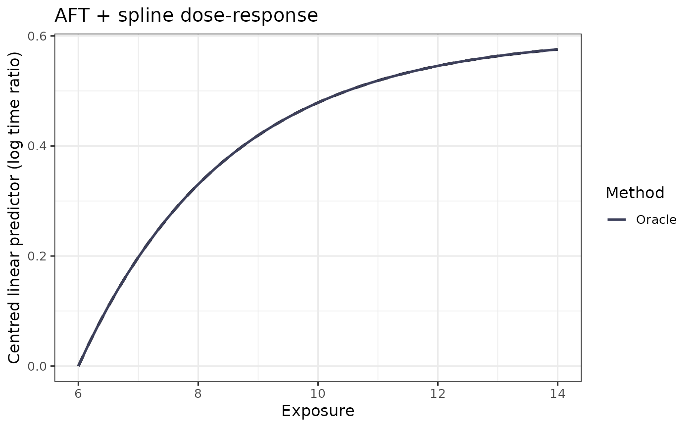

Overlay fitted dose-response curves with the truth and an optional CI
Source:R/viz.R
plot_curves.RdBuilds a faceted ggplot2 figure comparing a named list of fitted curves
against the truth, with an optional bootstrap confidence ribbon. Uses
the method_colors() palette by default.
Usage
plot_curves(
x_grid,
truth,
fits,
ci = NULL,
title = "AFT + spline dose-response",
x_lab = "Exposure",
y_lab = "Centred linear predictor (log time ratio)",
colors = method_colors(),
ci_color = NULL,
time_ratio = FALSE,
in_support = NULL
)Arguments
- x_grid
Numeric exposure grid.
- truth
Numeric vector of truth values (already centred at the first grid point), the same length as
x_grid. PassNULLto omit the truth line (e.g. on real data where the truth is unknown).- fits
Named list of numeric vectors of length
length(x_grid).- ci
Optional list with elements
lowerandupper, each a numeric vector of lengthlength(x_grid).- title
Plot title.
- x_lab, y_lab
Axis labels.
- colors
Optional named character vector of colours; defaults to
method_colors()(matchingNaive,Oracle,SIMEX).- ci_color
Optional single colour for the confidence ribbon. If
NULL(the default), usescolors["SIMEX"]when present (because the ribbon is typically a SIMEX bootstrap interval) and otherwise falls back to the first entry ofcolors.- time_ratio
Logical; if
TRUE, exponentiate the curves, truth, and CI ribbon so the y-axis reads as a time ratio relative to the reference anchor, and draw a horizontal reference line aty = 1. DefaultFALSE.- in_support
Optional logical vector aligned to
x_grid(e.g. from asimex_aft_spline()fit withsupport_probsset). Grid points where it isFALSEare drawn dashed with a lighter ribbon and a caption note, marking spline extrapolation beyond the exposure support.
Examples
if (requireNamespace("ggplot2", quietly = TRUE)) {
x <- seq(6, 14, length.out = 50)
truth <- f_true(x) - f_true(x[1])
plot_curves(x, truth, list(Oracle = truth))
}
